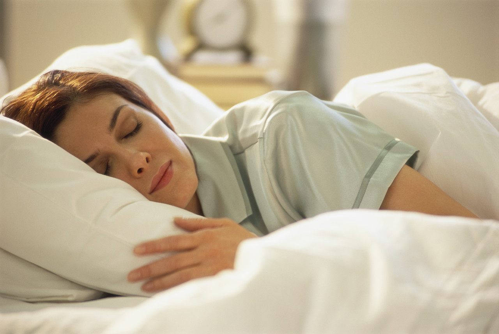

Alcohol and Sleep:
It's not all bad...Or is it?
Elijah Abramson
Fall 2011

More than 25 million Americans have trouble sleeping. Nearly a third of
Americans with persistent insomnia have used alcohol to help induce
sleep. Of those roughly 8 million people, two thirds have said alcohol
helps make them fall asleep. The National Institute of Health (NIH) has
published studies on the effects of alcohol which suggest both positive
and negative consequences of consuming alcohol before falling asleep.
This article will delve into a host of the issues: the effects that
alcohol has on sleep itself, the different ways it affects healthy
people and insomniacs, the unequal impact across genders, and hormonal
repercussions within sleep.
In normal sleep physiology, humans go
through two different sleep states: rapid eye movement (REM) sleep and
non-rapid eye movement (NREM) sleep. REM sleep is not fully understood,
but experiments on rats that normally live 3 years show that if
deprived of REM sleep, they live only 5 weeks. This deep sleep is also
necessary for human growth because it coincides with the release of
growth hormone. REM sleep also helps repair damage from stress and UV
radiation and rests emotional control centers in the brain, therefore
helping maintain optimal social and emotional function during the day
(Brain Basic: Understanding Sleep 2007). NREM sleep encompasses the
majority of the sleep cycle. Slow-wave sleep (SWS) is the deepest part
of NREM sleep and is crucial from humans. This was shown because after
sleep deprivation, people incur a sharp rebound of SWS.
REM and NREM sleep occur randomly in what
scientists label separate “stages” of sleep. These stages are based on
arousal threshold and brain activity – measured by
electroencephalograms (EEGs) that monitor electrical activity in the
brain. The four stages simply describe the depth of the sleep – stages
1 and 2 being light sleep and stages 3 and 4 being the deepest. Stages
3 and 4 are specifically called slow-wave sleep (SWS) because the
frequency of brain waves decreases to as low as 0.5 Hz (compared to 20
Hz during active wakefulness). REM sleep fits into these stages via
cycles that last 90 to 120 minutes – roughly four cycles occur in 8
hours of sleep. REM periods last about 10 minutes in the first cycle
and 30 to 40 minutes in the final two to three cycles.
Alcohol interferes with these sleep
patterns. A 1995 study in the journal Progress in Neurobiology showed
that alcohol increases wake periods throughout sleep and can cause
stage 1 type sleep to occur in the second half of sleep. REM sleep is
suppressed and fragmented with consumption of alcohol. Healthy people
sleep more fitfully in the second half of sleep and are less able to
effectively fall asleep. Complementarily, increased sleepiness prior to
alcohol administration also increases REM suppression and alcohol’s
general effects whereas increased alertness decreases these effects.
Studies have also found alcohol led to an increase
in the amount of SWS in the first half of the sleep period (recall SWS
is normally stage 3 and 4 NREM sleep). In insomniacs who had lower
levels of SWS than healthy people, overall SWS increased when they
consumed alcohol. In fact, alcohol consumption by insomniacs increased
SWS levels to equal that of healthy control subjects. As a comparison,
healthy adults were tested and alcohol did not affect SWS. However, it
was also shown that tolerance rapidly developed and alcohol induced
increases in SWS decreased to basal levels after three nights. This
increase in tolerance leads to increased consumption that must occur in
order to achieve the original SWS benefits.
Alcohol also affects sleep differently in
men and women. Women metabolize alcohol more quickly and researchers
consider this a major factor explaining why females sleep less
comfortably and for a shorter time than men after consuming alcohol. A
study in the journal Alcoholism: Clinical & Experimental Research
showed that after reaching a blood alcohol content of 0.1 (which is
considered visibly drunk), men’s sleep wasn’t altered whereas women
slept about 20 minutes less and awoke more often than when they fell
asleep sober. Sleep disruptions have been linked to alcoholism, so
women in particular are vulnerable to alcoholism.